How to create soft gradient blurs!
Web Design
UI/UX
Discover how to craft captivating gradient designs with a misty blur effect using Figma, transforming your website’s look with a trendy backdrop.
Ever been eyeballin’ those fancy gradient designs on swanky websites and thought, “How on earth…?” Well, I got the answer for you! I did the work you don’t have to and went down the rabbit hole and guess what? I found the gold at the end of the rainbow! And yep, it’s not just a funky HTML trick. I’ve been there, tried that, got that T-shirt.

Alright, spoiler alert! The magic happens in Figma. Yep, that’s the secret sauce, or rather, our tool for cookin’ up some gradient goodness. Let’s get started!
Step-by-Step Guide to Nailing That Gradient Vibe:
1. Fire Up Figma!
- Hop on figma and start a fresh design file.
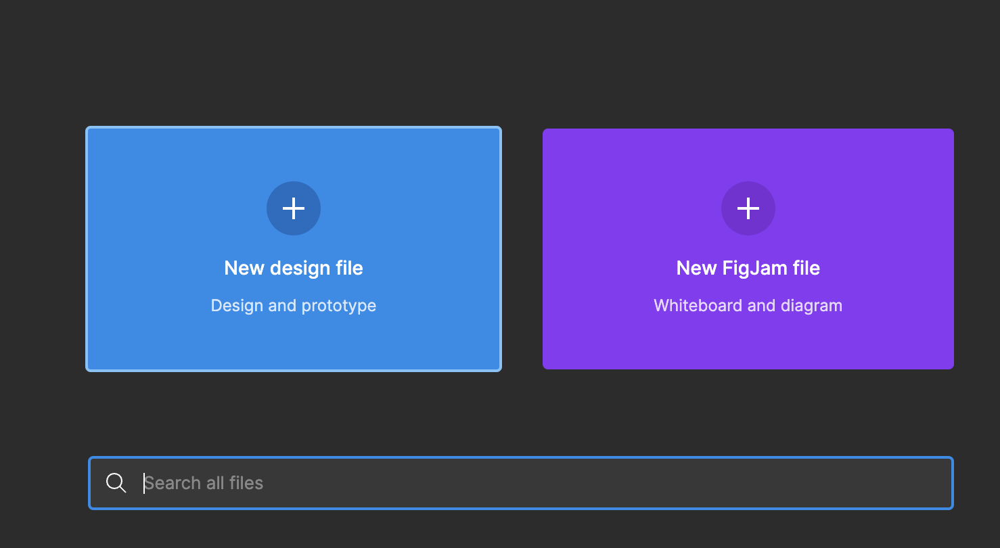
- Fancy a rectangle to get things in perspective? Go for it. If not, you do you!
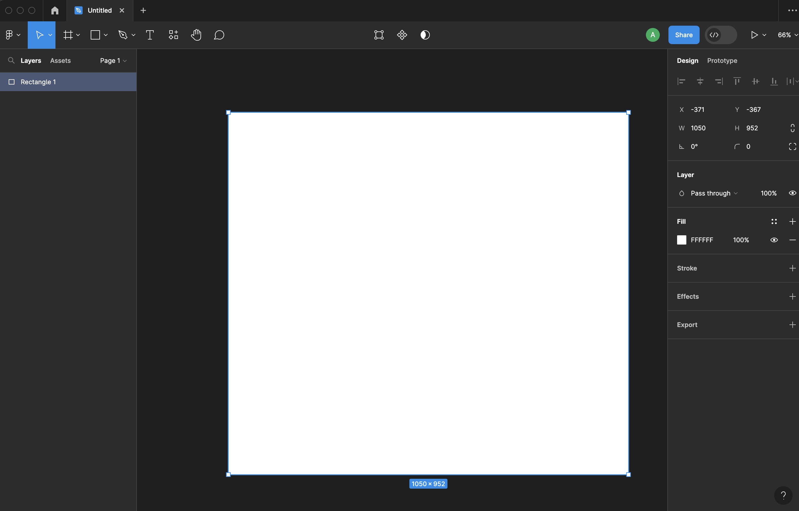
2. Shape Time!
- Create shape that meets your fancy.
- I’m gonna choose a rectangle because, heck, maybe I’m more square than I thought. :)
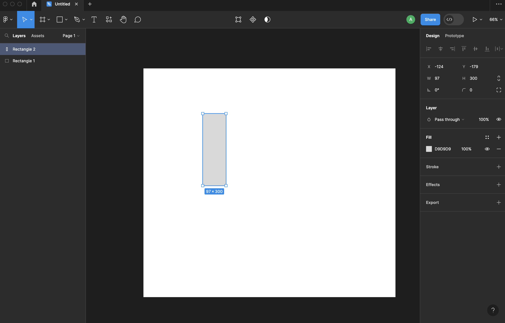
3. Paint the Town…Any Color You Want!
- Hit that fill color and choose your jam.

- Wanna level up? Use Gradients! Mix and match and watch the magic.
- Mini tip: If colors got you stumped, check out coolors.co It’s like a candy store for color lovers!
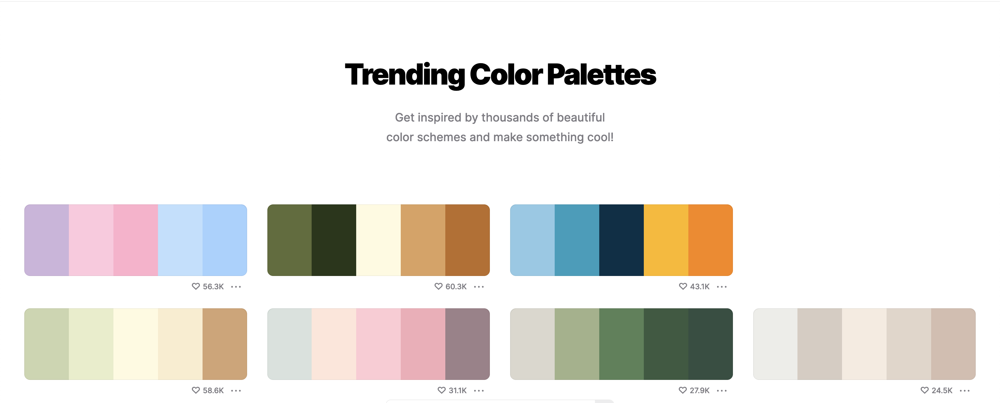
4. Round Those Edges (If That’s Your Thing)
- Me? I like ’em rounded. Because, why not?
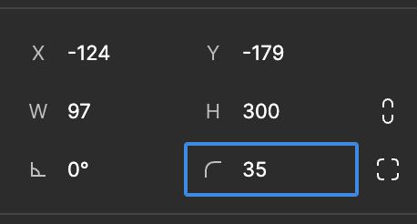
5. The MEGA Secret Sauce: The Blur!
- This one is the game-changer! Dive into ‘Effects’, pop that dropdown, and bam! – LAYER BLUR! Smack that button and get your blur on. Go wild!
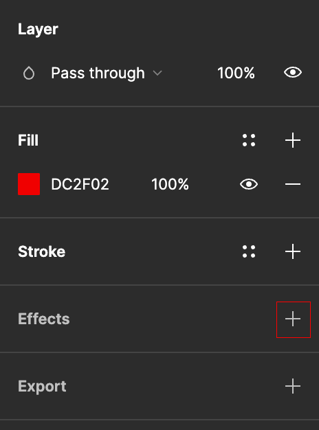
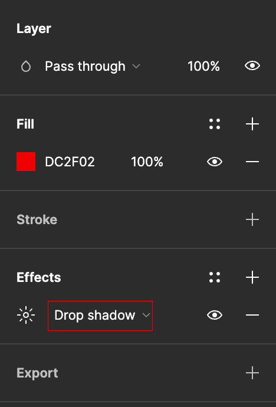

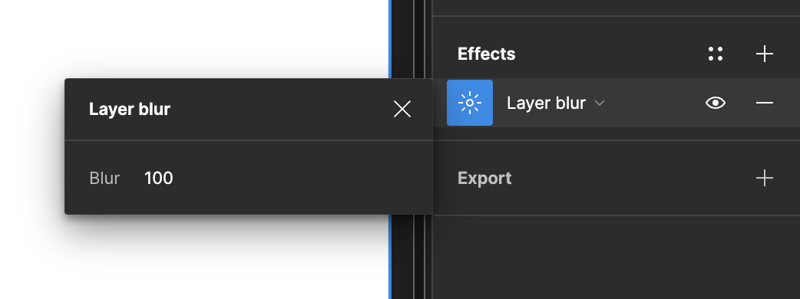
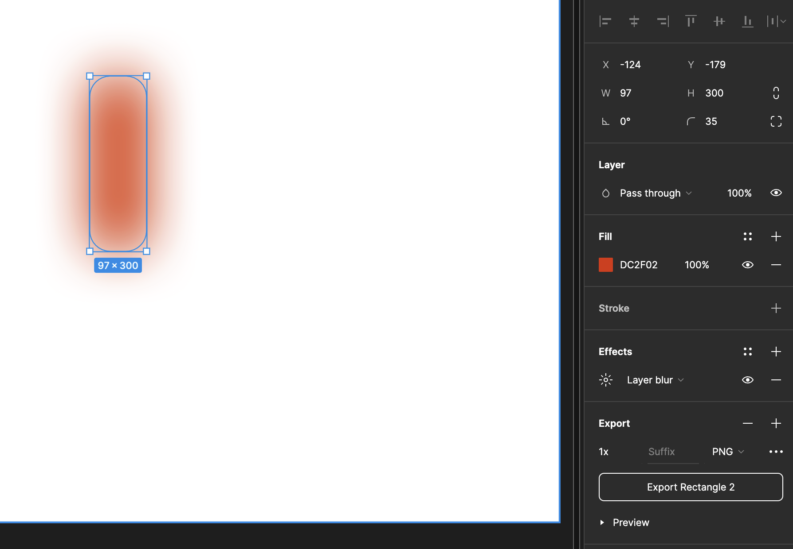
6. Group ’Em Up together!
- If you went all out with a bunch of shapes, nows you change to group ’em together. For my Mac buddies:
cmd + g, and for the Windows gang:ctrl + g. No judgment. ;)
7. Time to export!
- Get your design exported. SVG’s is my preferred method, but hey, mix it up if you’re feelin’ spicy. Don’t forget to toss it into your website’s folder.

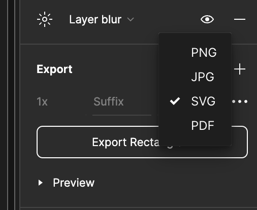
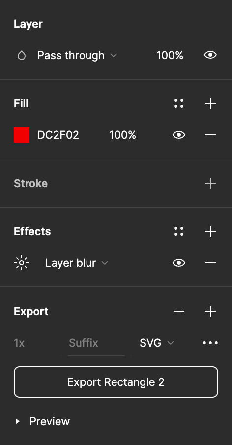
Last step? Let’s show off that beauty on your website!
8. Deploy it on Your Site:
- Slide that gradient goodness into your site:
<img src="path/to/cloud" alt="Your Gradient Magic" />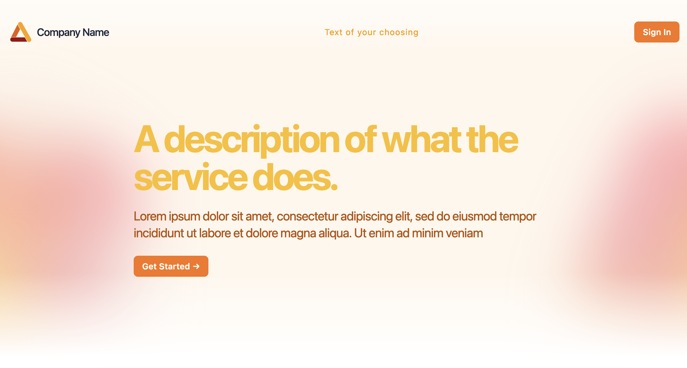
And boom! You’re now rocking a website background that’s got all the vibes. Go on, bask in the gradient glory you just whipped up!